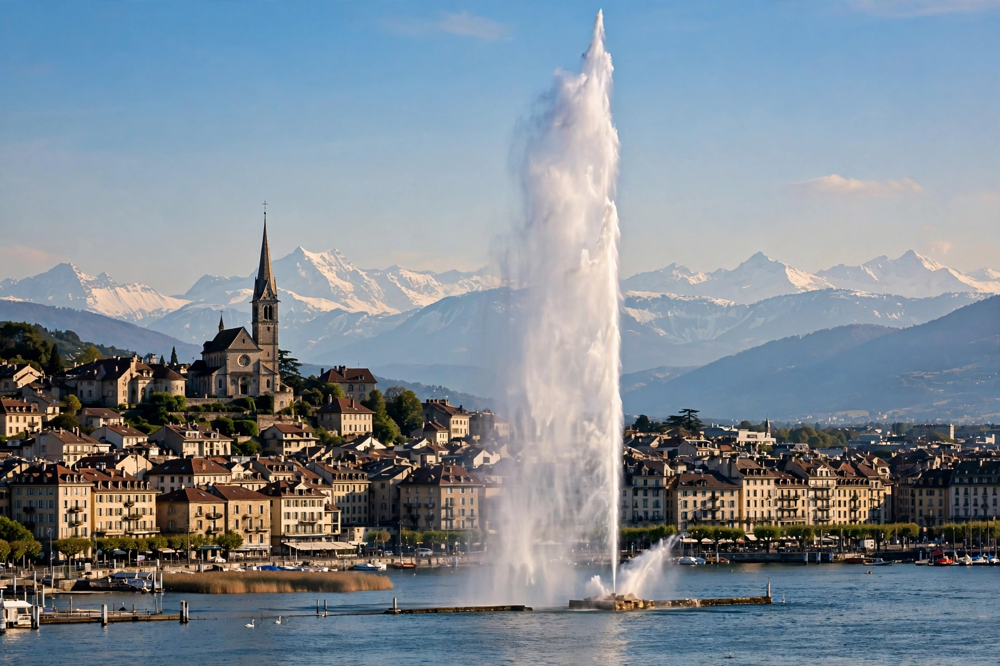
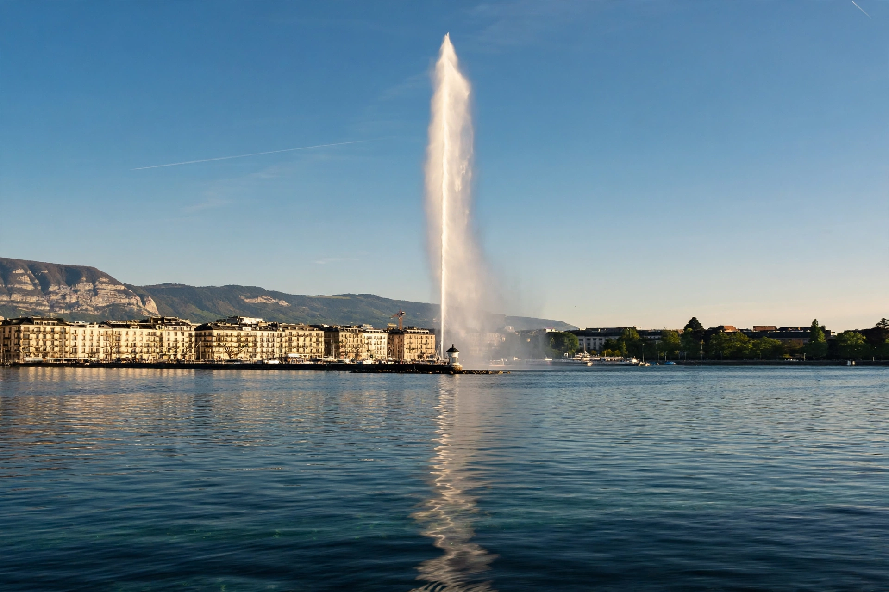

Geneva
From Wikipedia, the free encyclopedia


[Image: Geneva's lakefront with the Jet d'Eau fountain shooting high over Lake Geneva]Geneva's lakefront with the Jet d'Eau fountain shooting high over Lake Geneva
Geneva is the second-most populous city in Switzerland and the most populous city of French-speaking Romandy, situated where the Rhône leaves Lake Geneva, close to the French border. The city proper has roughly 200,000 inhabitants, with around a million in the wider cross-border metropolitan area (figures approximate).
Geneva is a global centre for diplomacy and finance: it hosts the European headquarters of the United Nations (Palais des Nations), the headquarters of the ICRC (Red Cross), WHO, WTO, UNHCR and many other international organisations and NGOs, as well as CERN nearby. Historically it was John Calvin's Protestant stronghold — the 'Protestant Rome' — and the birthplace of the Geneva Conventions governing humanitarian law in war. Its emblematic landmark is the Jet d'Eau, a great fountain in the lake.
History
A Celtic and then Roman settlement, Geneva became a bishopric and later a free imperial city. Calvin's arrival in 1536 made it a Reformation centre and refuge. It joined the Swiss Confederation in 1815. The first Geneva Convention (1864), the League of Nations (1919) and the post-1945 UN system built its modern diplomatic role.
See also
Switzerland · United Nations · Red Cross · John Calvin · Lake Geneva · CERN